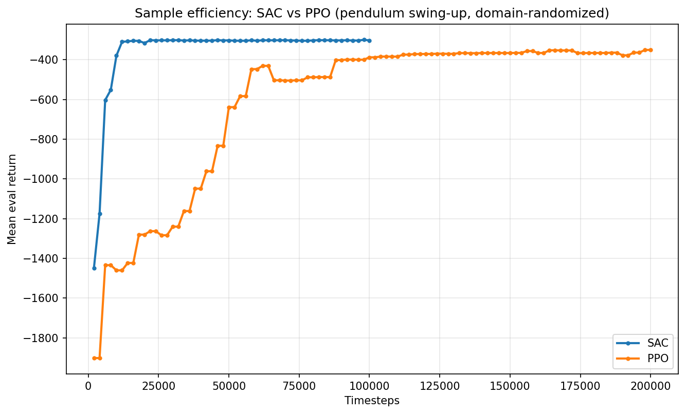
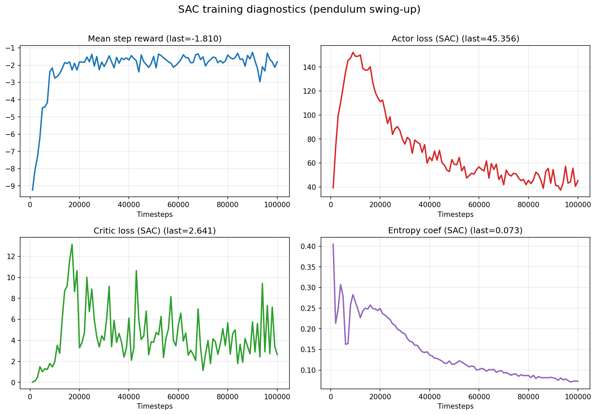
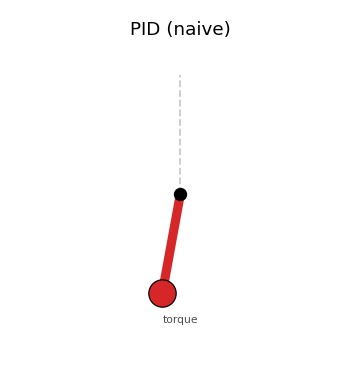
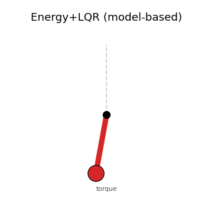
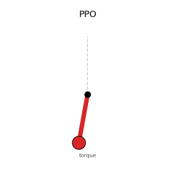
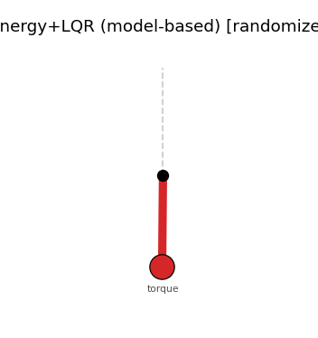
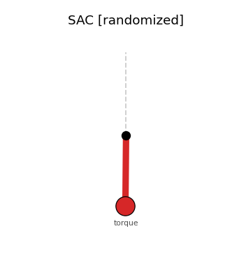
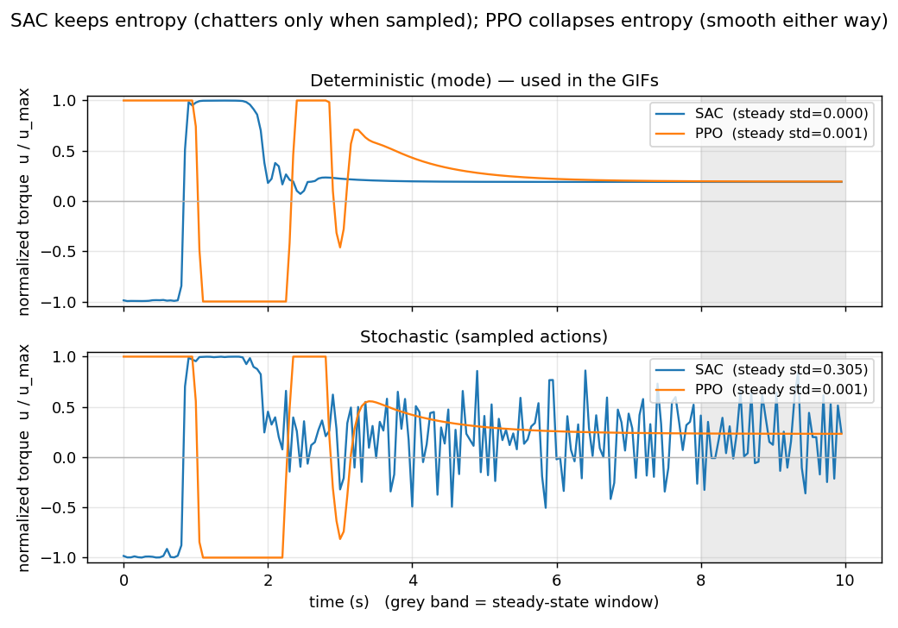
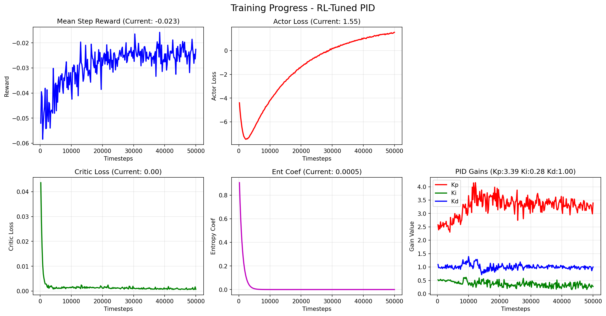
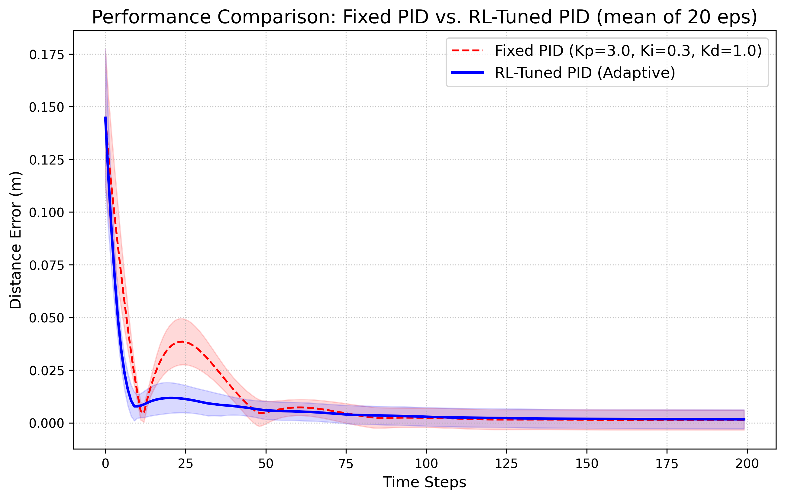

当模型靠得住时用经典控制，
靠不住时用强化学习 —— 以及如何兼得
两个互补的小实验，回答同一个工程问题：RL 到底什么时候该用、怎么用得安全。
欠驱动任务下，经典 Energy+LQR 与带域随机化的 RL（SAC/PPO/残差）正面对决：模型准 vs 模型不准。
FetchReach 机械臂：不让 RL 取代 PID，而是让 SAC 实时输出 [Kp,Ki,Kd]，做自适应增益调度。
倒立摆 Swing-up：
不确定性下的「经典控制 vs 强化学习」
一句话主旨：模型准时，model-based 最优；模型不准时，带域随机化的 RL 才换来鲁棒性 —— 而在连续控制上，off-policy 的 SAC 比 PPO 样本效率高得多。
图表在 results/pendulum/，复现：python scripts/pendulum_study.py
θ=0 为竖直向上的不稳定平衡）。最大力矩不足以直接举起 → 必须先注入能量摆上去、再在顶端平衡。任务本质是欠驱动（underactuated）。在参数不确定（质量 / 长度 / 阻尼未知）下，哪种方法扛得住？
I=m·l²/3，重力力矩 m·g·(l/2)·sinθ，阻尼 b·θ̇，dt=0.05，|u|≤2，|θ̇|≤8；名义 m=1,l=1,g=10,b=0。
reward = −( θ_norm² + 0.1·θ̇² + 0.001·u² )量纲排序：位置 ≫ 速度 ≫ 力矩。所有 RL 共用同一套奖励；经典控制器不用奖励（靠模型）。
| 参数 | 方式 | 范围 |
|---|---|---|
| 质量 m | 乘性 | ×[0.6, 1.4]（±40%） |
| 长度 l | 乘性 | ×[0.7, 1.3]（±30%） |
| 阻尼 b | 加性 | [0.0, 0.15] |
m,l 一变，惯量 I 与重力力矩都变 → swing-up 能量与顶端线性化都偏离名义。RL 每个 episode 见到不同的摆 → 学到跨整个参数分布都能用的策略（sim2real 核心）。经典 Energy+LQR 始终基于固定名义模型，参数一随机就必然失配。
−(Kp·θ+Kd·θ̇)，预期失败的基线。

该看的收敛信号：ent_coef 从 0.40 自适应衰减到 ~0.072（探索→利用）+ eval return 上升。
| 控制器 | 回报 ↑ | 直立占比 ↑ |
|---|---|---|
| PID（朴素） | −1495 | 0.00 |
| Energy+LQR | −360 | 1.00 |
| PPO | −381 | 1.00 |
| SAC | −307 | 1.00 |
| Model-based + 残差 | −335 | 1.00 |



| 控制器 | 回报 ↑ | 直立占比 ↑ |
|---|---|---|
| PID（朴素） | −1404 | 0.02 |
| Energy+LQR | −884 | 0.27 ↓ |
| PPO | −430 | 0.91 |
| SAC | −327 | 1.00 |
| 残差 | −363 | 0.96 |



E[Σr+α·H(π)] + 顶端 Q 在动作维近平 + u² 惩罚极小 → 采样方差保留到稳态。Δu² 平滑惩罚/减小目标熵。这是连续控制「探索 vs 平滑」权衡的干净例证。用 RL 在线整定 PID 增益
（FetchReach 机械臂）
一句话主旨：不要让 RL 取代 PID，而是让 RL 去「调」PID。让 SAC 实时输出 [Kp,Ki,Kd]、由内层 PID 闭环驱动机械臂 —— 平均增益≈人工精调，但能沿轨迹动态调节：过冲↓3×、调节时间↓6×，稳态持平。
代码 robot_arm/test_rl_pid.py / compare_pid_rl.py；图表 robot_arm/result_data/
FetchReach-v4（7-DoF 机械臂，末端到达 3D 目标），dense 奖励，全驱动、反馈友好。[Kp,Ki,Kd]，再由内层 PID 用 误差=目标−末端位置 算速度去驱动。Kp = (a₀+1) × 2.5 → [0, 5]
Ki = (a₁+1) × 0.5 → [0, 1]
Kd = (a₂+1) × 1.0 → [0, 2]error = desired_goal − gripper_pos
integral += error; clip(integral,−1,1) # 抗饱和
derivative = error − prev_error
v = Kp·error + Ki·integral + Kd·derivative
action[:3] = clip(v, −1, 1) # 速度指令reward = −dist
− 0.1·speed² (dist<3cm：靠近罚速度→抑过冲)
+ 0.02 (dist<1.5cm：停留奖励→稳态)lr=1e-3，50k 步。一切以 −dist（米）为基准，它在各区域的量级决定塑形项要多大才「被听见」：
| 区域 | dist | |−dist| 量级 |
|---|---|---|
| 起点 | ≈0.145 m | O(0.1) |
| 靠近区 | <0.03 m | O(0.01–0.03) |
| 稳态 | ≈0.0015 m | O(0.001) |
0.1·speed²（dist<3cm）让「近处高速」≈「离目标 3cm」一样贵 → 交叉点落在会过冲的高速档，慢速精修近乎免罚：
| speed | 0.1·speed² | vs 主项(≈0.03) |
|---|---|---|
| 0.5（快·要过冲） | 0.025 | 同量级 → 强罚 |
| 0.2（中） | 0.004 | ≈1/7 温和 |
| 0.05（在收敛） | 0.00025 | 可忽略 |
平方 → 只精准打击大速度；空间门控在 3cm 内 → 远处仍可高速冲（编码了「远冲近稳」的增益调度）。
+0.02（dist<1.5cm）制造一个「粘性势阱」压稳态误差。关键约束：bonus 必须压过半径处的距离惩罚 → 0.02 > 0.015，净奖励才在圈内翻正。
| 位置 | 净 reward |
|---|---|
| 边缘 dist=0.015 | −0.015 + 0.02 = +0.005（转正） |
| 圆心 dist→0 | +0.02 |
| 刚出界 dist=0.016 | −0.016（无 bonus） |
边界处出现 ≈0.021 的断崖：圈内严格优于「刚出圈」→ 阱才粘得住。若设成 <0.015，半径处仍为负，势阱不粘。
pid_vs_rl_pid_comparison.png 的过冲峰值 + 调节时间是否改善。

| 指标 | Fixed PID | RL-PID |
|---|---|---|
| 初始误差(同seed) | 0.145 m | 0.145 m |
| 首次进 1.5cm | 第 10 步 | 第 8 步 |
| 过冲峰值 | 0.039 m | 0.012 m (↓~3×) |
| 调节时间(2cm) | 第 37 步 | 第 6 步 (↓~6×) |
| 稳态误差 | 0.0014 m | 0.0017 m |
固定 PID 第 25 步附近回弹到 0.039m 再衰减振荡，约第 37 步才稳；RL 只有 0.012m 小鼓包就平滑收敛。75 步后两者稳态几乎重合。